SELECTED WORK
Details that define a place.
Explore the finished work, workshop details and applications.
16 examples
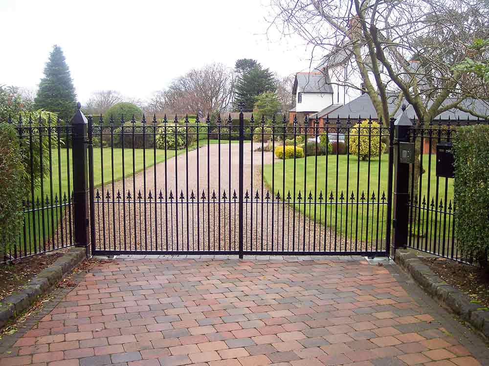
Gates
Black driveway gates between brick and stone pillars ↗

Fabrication
Fabricated steel frames installed outdoors ↗
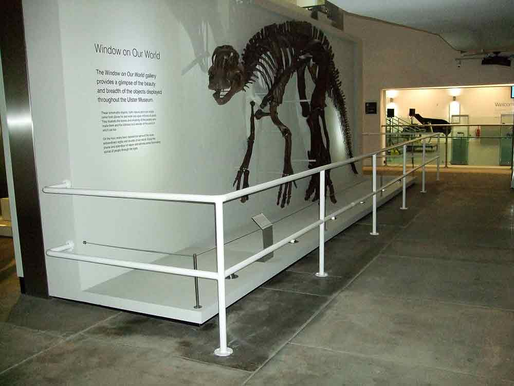
Railings
White interior guard rail beside a museum display ↗
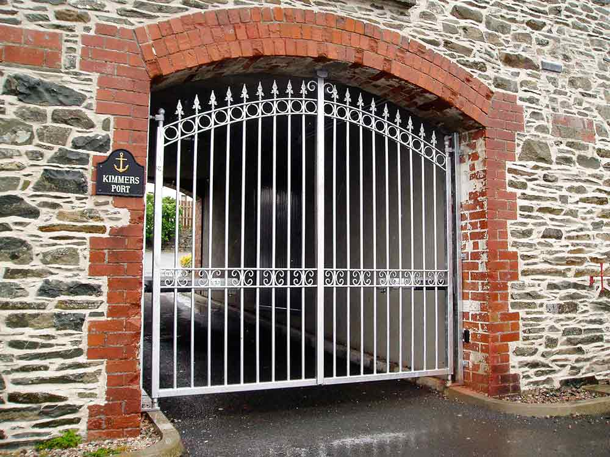
Gates
Silver gates fitted within a stone archway ↗
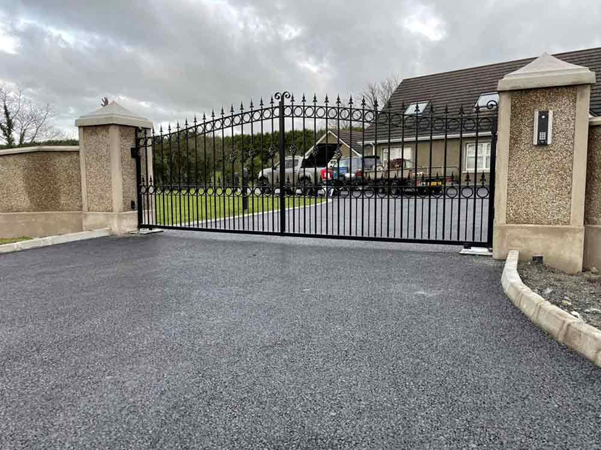
Gates
Black entrance gate between masonry pillars ↗
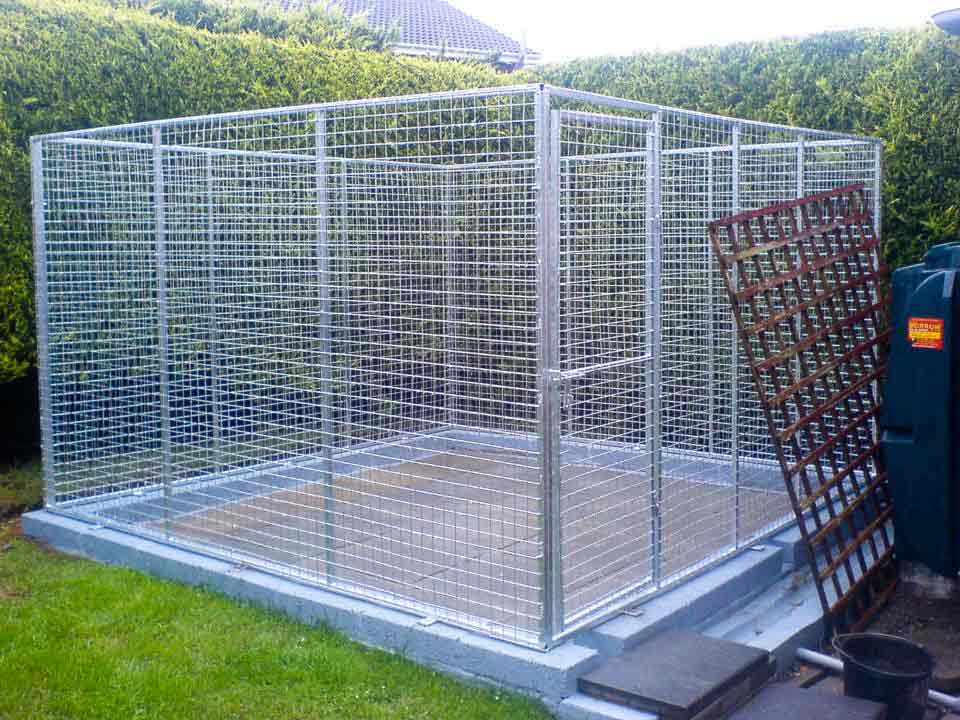
Dog Runs
Galvanised mesh dog enclosure ↗
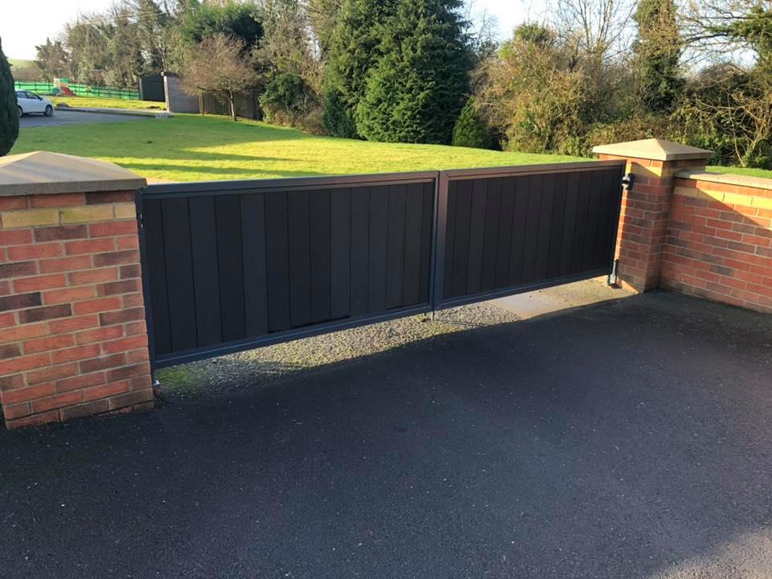
Gates
Dark panelled driveway gate ↗
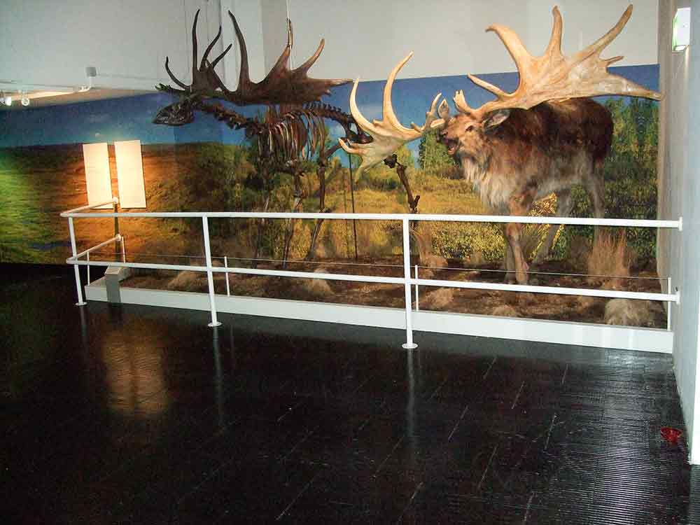
Railings
Interior protective railing beside a museum display ↗
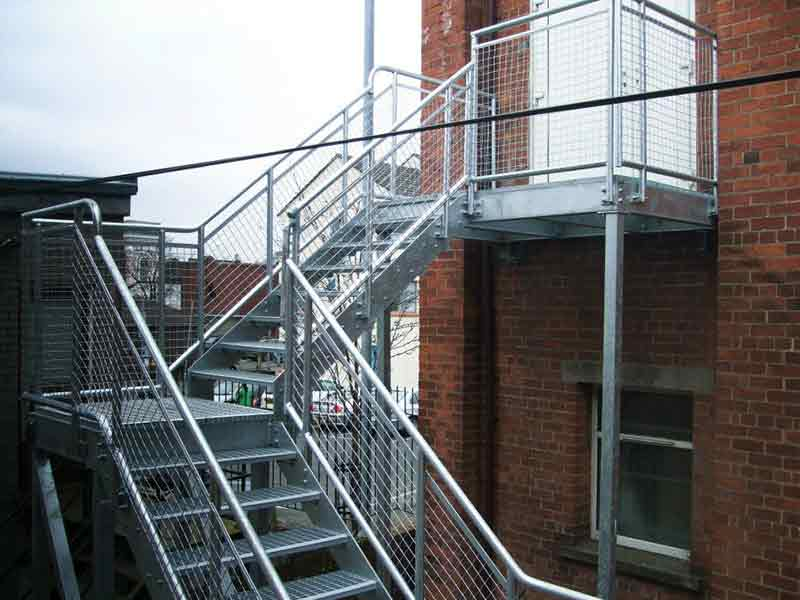
Stairs
External steel stairway and landing ↗
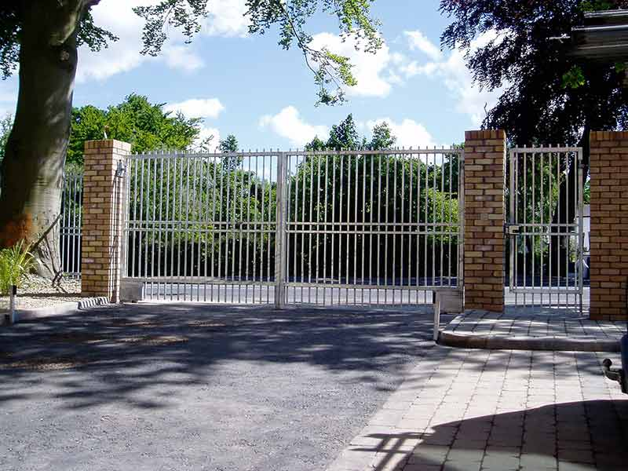
Gates
Silver driveway gates between brick pillars ↗
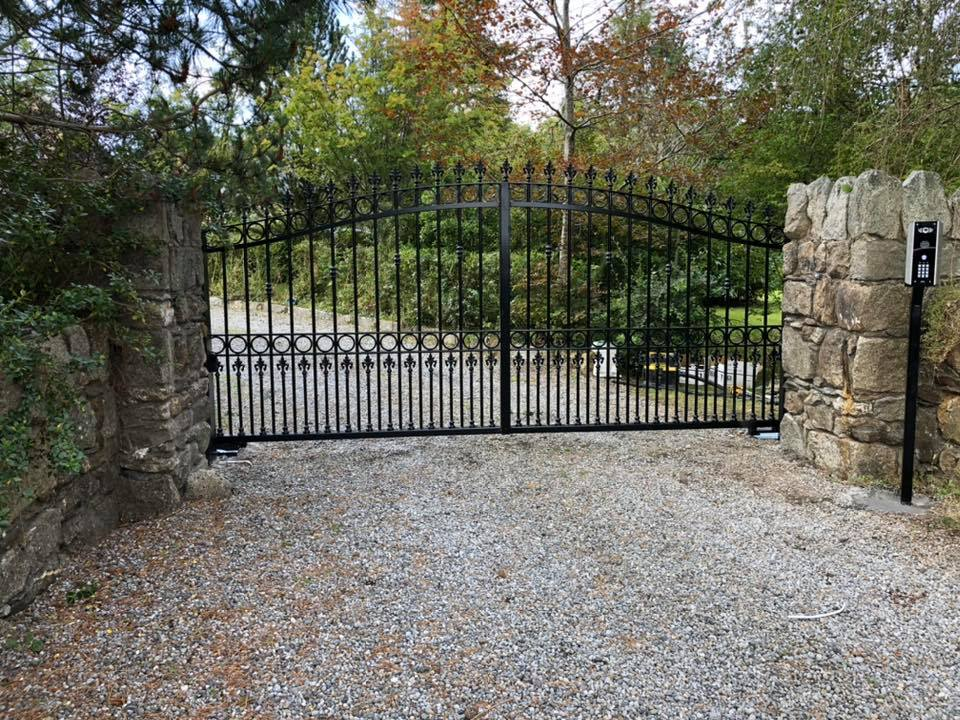
Gates
Decorative black driveway gates between stone pillars ↗
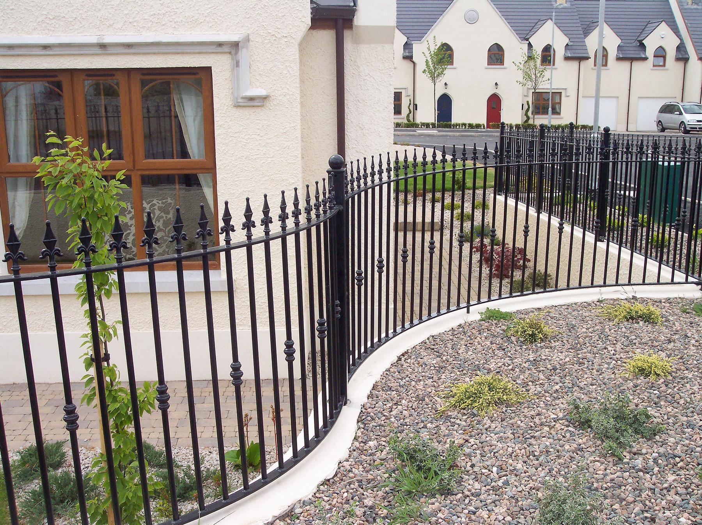
Railings
Curved black railings beside a house ↗
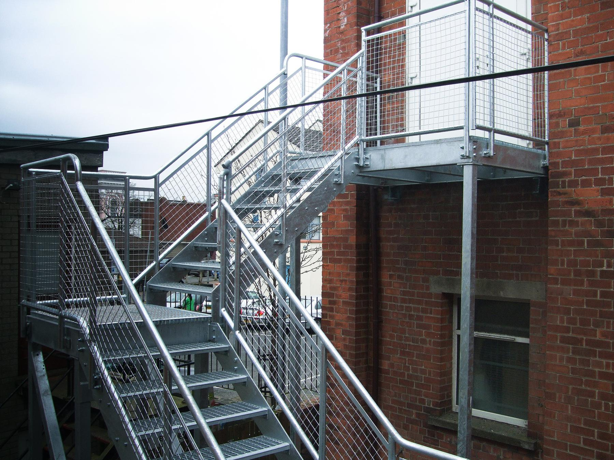
Stairs
Galvanised exterior stairway and landing ↗

Balconies
Elevated steel balcony attached to a house ↗
Dog Runs
Galvanised mesh dog enclosure with gated entrance ↗

Fabrication